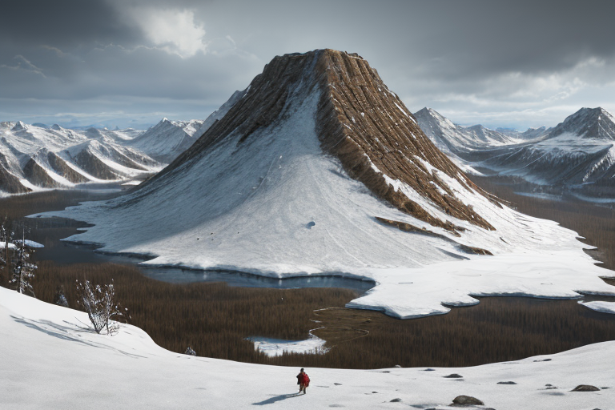
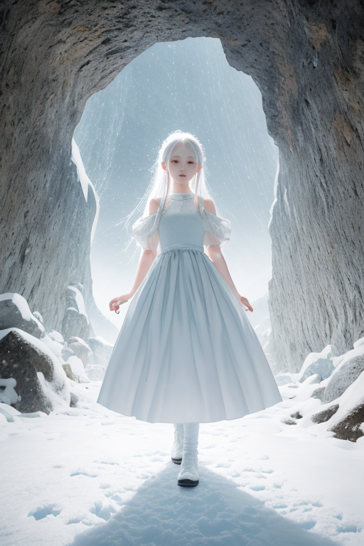
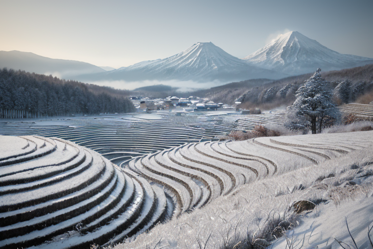
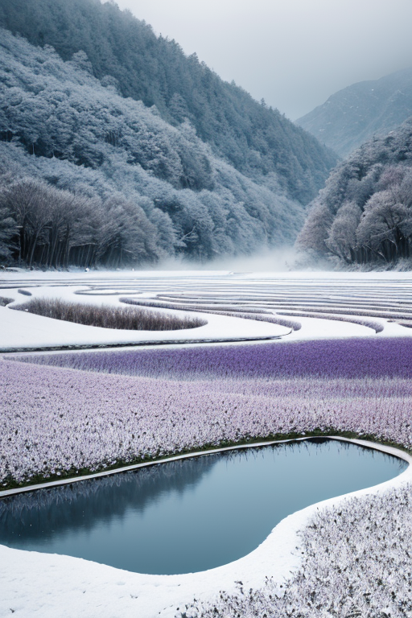
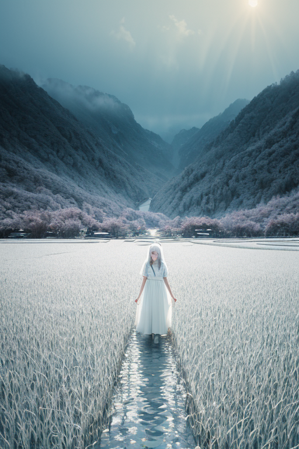

第一章 現実の新潟
あなたはまだ気づいていない。この土地にも、王がいることを。
上杉謙信が居城とした春日山城跡は、今は静かな山の公園だ。訪れる人は、石垣や土塁の痕跡に戦国の気配を感じるかもしれない。しかし、その地層の深く、岩盤の微かな歪みは、歴史の転換点が地殻に刻んだ、消えない軋みでもある。ここは歪みの列島の中でも、特に複雑な圧力が蓄積する地点の一つだった。
その圧力の調整を、彼は静かに続けていた。王、ニイガリア・アルバである。雪原のように白い衣に藍の縁取り、その姿は麓の街からは見えない。彼の仕事は、歴史の激動が残した地質の「余白」、つまりプレートの隙間や断層の末端に、次の破綻が連鎖しないよう、圧力を分散させることだ。巨大な力そのものを消すことはできない。ただ、その解放のタイミングと方向を、ほんの少しだけ調整する。
彼は雪のように降り積もるデータ──地鳴り、歪み、地下水の変化──を、感情を持たないはずの心で「読んで」いた。そして問う。この緊張の余白に、次に何を書かせるのか。破壊か、それとも、ただの揺らぎか。答えは、まだ雪の下にある。

第二章 歪みの兆候
星峠の棚田に、春の雪解け水が鏡のように張られていた。その水面に、佐渡金山の坑道から延びる、数百年分の採掘による地殻の「空洞」が、微かな歪みとして映っていた。上杉謙信が軍旗を翻した春日山城の地下では、戦国の争乱が蓄積した「熱」のようなものが、静かに冷めきらないまま残されている。歴史の重みは、土地の記憶となり、目に見えない圧力として沈殿する。
王は、越後湯沢の雪洞のような静寂の中で目を閉じる。アルバナが報告するデータは、単なる物理的な数値ではなかった。そこには、金山労働者の嘆き、合戦の怒号、そして豪雪に耐える人々の「忍耐」そのものが、地層のひずみとして刻まれている。それらが、現代のプレートの動きと共鳴し、新たな歪みの種となる瞬間を、彼は感知した。
「余白に、何を書く？」
問いは、清津峡のV字谷にこだまする。破局への一歩か、それとも、ただのためらいか。彼の選択は、歴史の堆積と、今この瞬間のプレッシャーの、狭間で揺れていた。

第三章 王の葛藤
星峠の棚田に、冬の余白が広がっていた。雪に覆われた幾何学模様は、次の実りへの静かな問いかけのようだ。ニイガリア・アルバは、その余白の中心に立ち、地中から響く二つの声を聞き分けていた。一つは、佐渡金山の坑道が軋む、重く鈍い音。もう一つは、越後平野の雪解け水が地脈を潤す、微かなせせらぎだ。前者は破壊への傾斜、後者は新たな生成の予感。彼の役割は、この傾斜を微調整し、破局を一段階手前で食い止めることだ。
しかし、彼の内側で、アルバナの「忍耐」が震えていた。この歪みの種は、単なる地殻の圧力ではない。謙信が戦場に散らせた「義」の激情、金山の闇に沈んだ無念、それら数百年の感情の堆積が、今、解放を求めている。抑え続けることが、果たして正しい調整なのか。
彼は目を閉じた。余白に書くべきは、静かな鎮静か、それとも、あるがままの解放による「変革」か。雪原は、白い答えを拒んだ。

第四章 妖精との対話
星峠の棚田の水面に、雪が静かに溶けていた。アルバナは、王の沈黙を前に、初めて自らの声を震わせた。
「我が王。この『義』の激情と『無念』の堆積は、雪のように降り積もり、歪みを育んでいます。これを抑え続ける調整は、やがて更大な亀裂を生むでしょう」
コシヒカリスが稲穂を揺らし、金色の波を送った。「この地は、謙信公の決断と、金山の労働の上に、今の豊穣を築きました。激情も無念も、この土地の肥やしです。解放は破壊ではなく、新たな耕起です」
王は清津峡の深いヴィオレットブルーを想った。地の底から湧き上がるものを、封じるだけが調整なのか。佐渡の海が、対岸の陸地を削り、同時に新たな土地を運ぶように。
「余白に書くべきは、静寂ではない」アルバナが言った。「雪解けの音です。長く凍てついたものが、ゆっくりと動き始める音を。それが、この『農革』の始まりです」
王は、自らの内側で震える「忍耐」という感情の名を、初めて認識した。それは、何も書かないことではなかった。書くべき時のために、筆を温め続けることだった。

第五章 微調整と余韻
星峠の棚田に、雪解け水が満ち始めた。その水は、長い冬の間、雪として蓄えられていた「余白」そのものだった。王は、その水が田を潤し、やがてコシヒカリとなって実る一連の「豊穣の波」を、妖精たちと共に整えていた。しかし、彼の内側では、別の波が荒れていた。歴史の大きな歪みが、この地を襲おうとしている。それは、謙信が戦い、金山が掘られてきたこの土地の、もう一つの顔。地殻が耐えきれずに解放する、巨大なエネルギーだった。
「これ以上の緩和は、できません」アルバナが蒼い顔で報告した。妖精たちの力には限界があった。王は黙って越後平野を見下ろした。ここで歪みを封じれば、別の場所、おそらくより多くの命が集まる場所に、より大きな歪みが跳ぶ。彼ができるのは、ほんの少し、その「向き」を変えることだけだ。彼は、自らの存在の核である「余白」を、ほぼ全て消費した。歴史の流れを一度だけ、ほんの数度、曲げるために。
その代償は、彼自身の「感情」だった。雪解けの音を聞き、豊穣を願う人々の想いを感じ取っていた、あの微かな感覚が、白紙に戻るように消えていった。揺れは緩和され、被害は最小限に抑えられた。人々はそれを、幸運と呼んだ。誰も知らない、雪原のような余白が、そこに広がっていた。
あなたの町にも、王がいる。